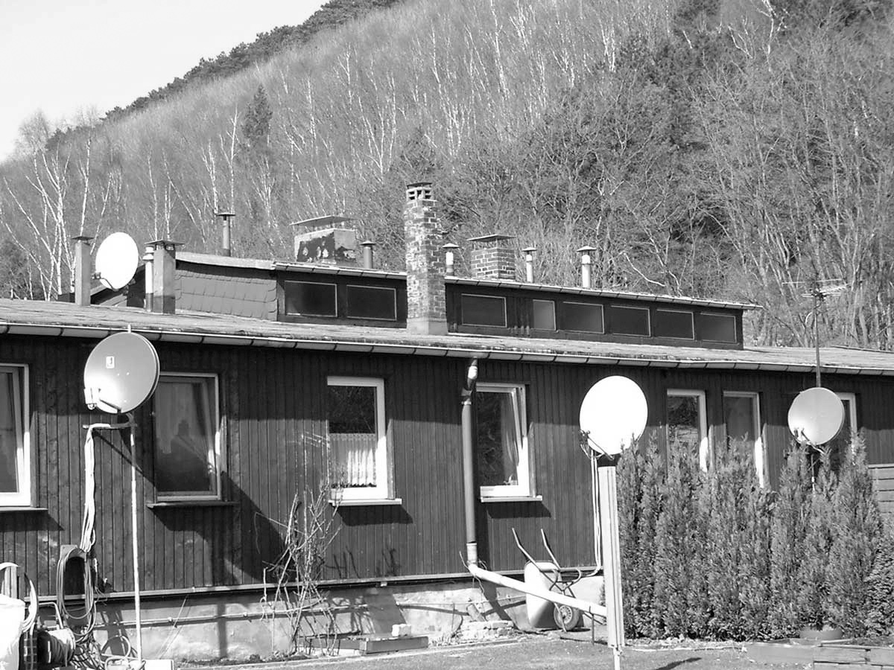

Goslar in der NS-Zeit
Zwangsarbeiterlager
Dort, wo heute nur ein großer Parkplatz existiert, hatte 1941 die „Wohnlagergemeinschaft Goslarer Betriebe e.V. “
das Lager Petersberg errichtet, um die während des Krieges zunehmende Zahl von Zwangsarbeiterinnen und -arbeitern,
die in kleinen und mittleren Betrieben der Stadt arbeiteten, unterzubringen. Das Lager war für ca. 200 Personen
ausgerichtet. Größere Betriebe hatte eigene Lager eingerichtet: Die Unterharzer Berg- und Hüttenwerke
unterhielten im Forsthaus eine Unterkunft für Arbeiter aus Westeuropa und dem Balkan.
„Ostarbeiter“ wurden zuerst in der alten Kaue und ab 1943/44 in einem hinter dem Verwaltungsgebäude neu errichteten Barackenlager untergebracht. In der Astfelder Straße befand sich ein Lager der Reichsbahn, in dem „Ostarbeiter“ wohnten. In Baracken auf dem Flugplatz lebten dort eingesetzte Arbeitskräfte. Die Güter Grauhof, Riechenberg und Ohlhof unterhielten ebenfalls eigene Lager für ihre Arbeiterinnen und Arbeiter. Die Firma Borchers/H.C. Starck hatte Baracken auf dem Werksgelände Im Schleeke errichtet und nutzte die Schlichtwohnungen Am Sudmerberg 7 und 8 a.
Tausende Frauen und Männer durchliefen in den Jahren 1939 bis 1945 die Betriebe und Lager der Stadt. Ihre Behandlung war menschenunwürdig. Sie litten an Überarbeitung und Krankheiten und wurden ständig mit Strafen und Tod bedroht. Im November 1939, also 2 Monate nach Kriegsbeginn waren 431 ausländische Arbeiter*innen in Goslar angemeldet. Im Juni 1944 befanden sich 2.300 Ausländerinnen und Ausländer in den Lagern der Stadt. Ihr Anteil an den Beschäftigten im Bereich des Arbeitsamts Goslar betrug 22,9 Prozent. Bei der Besetzung der Stadt durch Truppen der US-Armee kamen sie frei und erhielten den besonders geschützten Status von Displaced Persons (DPs). Bis in die 1990er Jahre galt in der Stadt für diese Beschäftigten die Sprachregelung Fremdarbeiter, ganz so als seien sie freiwillig der Arbeit wegen aus ihren Heimatregionen nach Goslar gekommen.
„Ostarbeiter“ wurden zuerst in der alten Kaue und ab 1943/44 in einem hinter dem Verwaltungsgebäude neu errichteten Barackenlager untergebracht. In der Astfelder Straße befand sich ein Lager der Reichsbahn, in dem „Ostarbeiter“ wohnten. In Baracken auf dem Flugplatz lebten dort eingesetzte Arbeitskräfte. Die Güter Grauhof, Riechenberg und Ohlhof unterhielten ebenfalls eigene Lager für ihre Arbeiterinnen und Arbeiter. Die Firma Borchers/H.C. Starck hatte Baracken auf dem Werksgelände Im Schleeke errichtet und nutzte die Schlichtwohnungen Am Sudmerberg 7 und 8 a.
Tausende Frauen und Männer durchliefen in den Jahren 1939 bis 1945 die Betriebe und Lager der Stadt. Ihre Behandlung war menschenunwürdig. Sie litten an Überarbeitung und Krankheiten und wurden ständig mit Strafen und Tod bedroht. Im November 1939, also 2 Monate nach Kriegsbeginn waren 431 ausländische Arbeiter*innen in Goslar angemeldet. Im Juni 1944 befanden sich 2.300 Ausländerinnen und Ausländer in den Lagern der Stadt. Ihr Anteil an den Beschäftigten im Bereich des Arbeitsamts Goslar betrug 22,9 Prozent. Bei der Besetzung der Stadt durch Truppen der US-Armee kamen sie frei und erhielten den besonders geschützten Status von Displaced Persons (DPs). Bis in die 1990er Jahre galt in der Stadt für diese Beschäftigten die Sprachregelung Fremdarbeiter, ganz so als seien sie freiwillig der Arbeit wegen aus ihren Heimatregionen nach Goslar gekommen.


Ehemalige Zwangsarbeiterbaracke der Fa F. Borchers / H.C. Starck
Bild: F. Jacobs
Bild: F. Jacobs